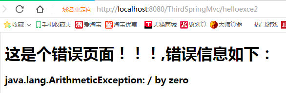
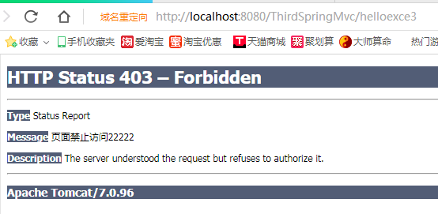
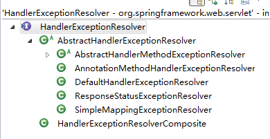

在系统开发过程中，异常处理是不可避免，如果异常处理不好，会给用户造成很差的体验，本文主要讲解在SpringMVC开发过程中，异常处理的相关知识点，仅供学习分享使用，如有不足之处，还请指正。
在SpringMvc中，处理异常有好几种方法，本文主要讲解两种方案：
如下所示：@ExceptionHandler标注在方法上，表示此方法可以用来处理异常，如果有多个异常需要捕获，则用逗号隔开。
如果需要捕获其他类的异常，则需要在类上增加@ControllerAdvice注解。
1 package com.hex.third;
2
3 import org.springframework.web.bind.annotation.ControllerAdvice;
4 import org.springframework.web.bind.annotation.ExceptionHandler;
5 import org.springframework.web.servlet.ModelAndView;
6
7 /**
8 * 自定义异常
9 * @author Administrator
10 *
11 */
12
13 @ControllerAdvice
14 public class MyException extends Exception {
15
16 /**
17 * 该方法可以捕获本类中抛出的ArithmeticException异常,可以支持多个异常
18 * @param ex 要捕获的一样，此方法必须只有一个参数，如果有其他类型的参数，则会报错
19 * @return
20 */
21 @ExceptionHandler({ArithmeticException.class,ArrayIndexOutOfBoundsException.class,MyArrayOutofBoundsException.class})
22 public ModelAndView handlerException(Exception ex){
23 //将ex信息在后台输出
24 System.out.println(ex.getMessage());
25 //将错误信息显示在前台
26 ModelAndView mav=new ModelAndView();
27 mav.setViewName("error");
28 mav.addObject("exce", ex);
29 return mav;
30 }
31 } 1 package com.hex.third;
2
3 import org.springframework.stereotype.Controller;
4 import org.springframework.web.bind.annotation.ControllerAdvice;
5 import org.springframework.web.bind.annotation.RequestMapping;
6 import org.springframework.web.servlet.ModelAndView;
7
8 @Controller
9 public class Exce2Controller {
10
11 /**
12 * 抛出一个异常
13 * @return
14 */
15 @RequestMapping("/helloexce2")
16 public ModelAndView HelloExce2(){
17 try{
18 int i=1/0 ;
19 }catch(ArithmeticException ex){
20 throw ex;
21 }
22 ModelAndView mav=new ModelAndView();
23 mav.addObject("helloexce","hello exception");
24 mav.setViewName("success");
25 return mav;
26 }
27 }输出错误页面，如下所示：

如下所示：value表示状态码，是枚举类型，reason显示状态信息
1 package com.hex.third;
2
3 import org.springframework.http.HttpStatus;
4 import org.springframework.web.bind.annotation.ResponseStatus;
5
6 /**
7 * 自定义异常类
8 * @author Administrator
9 * @ResponseStatus即可以表示在类前面，也可以表识在方法前面
10 *
11 */
12 @ResponseStatus(value=HttpStatus.FORBIDDEN,reason="页面禁止访问22222")
13 public class MyArrayOutofBoundsException extends Exception {
14
15 }如下所示：
1 /**
2 * 测试第三个异常
3 * @return
4 * @throws MyArrayOutofBoundsException
5 */
6 @RequestMapping("/helloexce3")
7 public ModelAndView HelloExce3() throws MyArrayOutofBoundsException{
8 if(true){
9 throw new MyArrayOutofBoundsException();
10 }
11 ModelAndView mav=new ModelAndView();
12 mav.addObject("helloexce","hello exception");
13 mav.setViewName("success");
14 return mav;
15 }如下所示：Message即为自定义信息

关于异常解析的分类，如下所示：用到的时候，可以多研究一下。

不论是狮子还是羚羊，都要奔跑；不论是贫穷还是富有，都要奋斗。